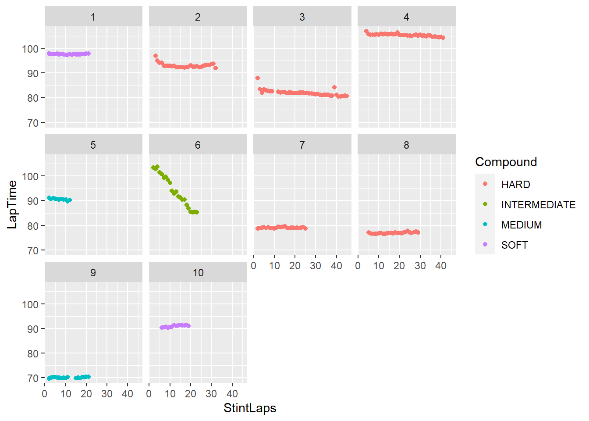

Use race lap times to create predictive tire falloff models for each driver, to use live in future races.
This project uses data from the FastF1 Python library, and imports it into the R environment for analysis.
This project also used the Ergast F1 API for initial EDA and simplified models.
TODO:
Normalise lap time some how? First lap = 1 or something?
Get circuit lap length? Longer lap = more wear per lap?
Extension: use this tire model to create simulated pit stop prediction models/visualisations (using D3.js).
Introduction
Data Sources
Initially, I used the Ergast F1 API as my main source of data, as it was an easy to use API that I could access with simple R tools. However, I soon realised that Ergast was missing a whole lot of data that I was interested in for this project.
Most importantly, the Ergast API did not track the tire compounds used. This is probably one of the most important pieces of information when trying to model tire degradation, as different compounds may have different falloff properties.
I was also interested in weather, which Ergast did not track.
Finally, my long term plan is to have this model run live during a race. Since the Ergast data is only updated hours after a session, it was never going to be the ‘final’ data source for this project.
For all these reasons, I decided to use the FastF1 Python library. I was initially hesitant to do this, because I want to do this project in R, and the Ergast API was much faster to pick up. But crucially, the FastF1 API has so much more data, and it has functionality to live stream the data during sessions, which would be useful later in the project when it comes to running these models live. For these reasons I decided I may as well go with FastF1.
Below is the my code for accessing the data. Note, this script is designed to be run from the command line with one argument (year). The program loops through every race of the season and outputs a single parquet file.
Code
import sysimport fastf1import pandas as pdimport pyarrow.parquet as pqfrom pathlib import Pathfrom datetime import datetime"""Run script from command line with the year as the only agrument. Writes dataframeto a .parquet file in /dataCommand line example: python get_race_data.py 2023"""def get_race_data(YEAR: int, roundNum: int) -> pd.DataFrame:# Get session data. Exits script if no data exists for year/roundtry: session = fastf1.get_session(YEAR, roundNum, "R")exceptValueError: sys.exit("Invalid YEAR or ROUND_NUMBER provided") session.load(weather=True, telemetry=False)# Get weather data weather_data = session._laps.get_weather_data()# Get laps data laps = session.laps# Prepare laps and weather data for joining laps = laps.reset_index(drop=True) weather_data = weather_data.reset_index(drop=True)# Join the two tables into a pandas df. Note: FastF1 uses Pandas under the hood lap_weather_race_df = pd.concat([laps, weather_data.loc[:, ~(weather_data.columns =='Time')]], axis=1)# Encode the round into dataframe lap_weather_race_df["Round"] = roundNum lap_weather_race_df["Season"] = YEARreturn lap_weather_race_dfdef get_completed_num_rounds(): schedule = fastf1.get_event_schedule(datetime.now().year) remaining = fastf1.get_events_remaining(datetime.now()) num_rounds = schedule.shape[0] - remaining.shape[0] # difference of rowsreturn num_roundsdef write_parquet(dataframe) ->None: filepath = Path(f'data/races_{arg_year_int}.parquet') filepath.parent.mkdir(parents=True, exist_ok=True) dataframe.to_parquet(filepath, index=False)returnif__name__=="__main__":iflen(sys.argv) !=2: sys.exit("Incorrect number of arguments: fastf1_testing.py YEAR ROUND_NUMBER") # Acquiring year and round arguments & convert to inttry: arg_year_int =int(sys.argv[1])exceptValueError: sys.exit("Incorrect argument type: fastf1_testing.py int int")# Loop over completed rounds and store in an array rounds_df_list = [] # We'll concatenate the dataframes together in one go laterif datetime.now().year == arg_year_int: num_rounds = get_completed_num_rounds()else: num_rounds = fastf1.get_event_schedule(arg_year_int).shape[0]print(num_rounds)for round_num inrange(1, num_rounds): # Include final round (Round 0 is testing)print("Getting round:", round_num, "----------------") round_data = get_race_data(arg_year_int, round_num) rounds_df_list.append(round_data)# Combine dataframes stored in array season_laptime_df = pd.concat(rounds_df_list)print(season_laptime_df.shape)# Output parquet file write_parquet(season_laptime_df)
# A tibble: 6 × 21
Driver DriverN…¹ LapTime LapNu…² Posit…³ Stint PitOu…⁴ PitIn…⁵ Compo…⁶ TyreL…⁷
<chr> <chr> <drtn> <dbl> <dbl> <dbl> <drtn> <drtn> <chr> <dbl>
1 VER 1 99.019… 1 1 1 1317.5… NA secs SOFT 4
2 VER 1 97.974… 2 1 1 … NA secs SOFT 5
3 VER 1 98.006… 3 1 1 … NA secs SOFT 6
4 VER 1 97.976… 4 1 1 … NA secs SOFT 7
5 VER 1 98.035… 5 1 1 … NA secs SOFT 8
6 VER 1 97.986… 6 1 1 … NA secs SOFT 9
# … with 11 more variables: FreshTyre <lgl>, Team <chr>, TrackStatus <chr>,
# Time <drtn>, AirTemp <dbl>, TrackTemp <dbl>, Humidity <dbl>,
# Pressure <dbl>, Rainfall <lgl>, Round <int>, Season <int>, and abbreviated
# variable names ¹DriverNumber, ²LapNumber, ³Position, ⁴PitOutTime,
# ⁵PitInTime, ⁶Compound, ⁷TyreLife
Get Circuit Data
The following code access the Race Schedule endpoint of the Ergast F1 API. It then accesses the Wikipedia article for the corresponding race and gets track details such as lap length, and type (street course, permanent faculty). Finally, it writes locally to a parquet file.
Code
# Get circuit informationlibrary(tidyverse)library(lubridate)library(jsonlite)library(arrow)library(rvest)YEAR <-2023# Get circuits for given year ---------------------------------------------# Use Ergast apicircuit_url <-paste0("https://ergast.com/api/f1/", YEAR, ".json")circuits_df <-unnest(fromJSON(circuit_url)$MRData$RaceTable$Races, cols =c(Circuit, FirstPractice, SecondPractice, ThirdPractice, Qualifying, Sprint), names_sep ="_")# Clean & Convert data types ----------------------------------------------# Remove columns that are not relevant. Convert to correct types (numeric,# datetime, etc.)circuits_df <- circuits_df %>%select(season, round, url, raceName, Circuit_circuitId, date, time) %>%rename(CircuitId = Circuit_circuitId, RaceDate = date, RaceTime = time, Round = round, Season = season) %>%mutate(RaceDate =ymd(RaceDate),RaceTime =hms(RaceTime),Round =as.numeric(Round),Season =as.numeric(Season))# # Define function to extract lap distance from Wikipedia race repo --------# Use rvest to get the circuit length from the corresponding Wikipedia page (in# url column)get_lap_distance <-function(race_wiki_url){print(race_wiki_url)Sys.sleep(0.1) lapDistanceKm <- race_wiki_url %>%read_html() %>%html_element(xpath ='//*[@id="mw-content-text"]/div[1]/table[1]/tbody/tr[9]/td') %>% html_text2 %>%str_extract("^(.*)(?= km)") %>%as.numeric()return(lapDistanceKm)}# Get circuit type from Wikipedia page# Use rvest again to get circuit typeget_circuit_type <-function(race_wiki_url) {print(race_wiki_url)Sys.sleep(0.1) circuitType <- race_wiki_url %>%read_html() %>%html_element(xpath ='//*[@id="mw-content-text"]/div[1]/table[1]/tbody/tr[8]/td') %>%html_text2()}# Append lap distances to circuits_df -------------------------------------# Go through each row and call the previously defined functions, write to dfcircuits_df <- circuits_df %>%rowwise() %>%mutate(lapDistance =ifelse(RaceDate <Sys.Date(), get_lap_distance(url), NA) ,circuitType =ifelse(RaceDate <Sys.Date(), get_circuit_type(url), NA))# Write to parquet --------------------------------------------------------path <-paste0("data/circuits_", YEAR, ".parquet")write_parquet(circuits_df, path)# LEGACY CODE -------------------------------------------------------------# get_circuit_data <- function(race_wiki_url){# # url = list()# circuit_lap_dists = list()# circuit_types = list()# # # wiki_url <- race_wiki_url_vect[i]# wiki_html <- read_html(wiki_url)# # print(wiki_url)# # # Get track data table from wiki page# track_data_table <- wiki_html %>%# html_element(xpath = '//*[@id="mw-content-text"]/div[1]/table[1]') %>%# html_table() %>%# .[,1:2] %>%# rename(col1 = 1, col2 = 2)# # # Get track type# circuit_types[i] <- track_data_table %>%# filter(col1 == "Course") %>%# pull()# # # Get lap length# circuit_lap_dists[i] <- track_data_table %>%# filter(col1 == "Course length") %>%# pull() %>%# str_extract("^(.*)(?= km)") %>%# as.numeric()# # url[i] <- wiki_url# # for (i in 1:length(race_wiki_url_vect)) {# # }# tibble(url, circuit_lap_dists, circuit_types)# }# # # Access wiki pages and create dataframe# circuit_data.df <- get_circuit_data(circuits_df %>% filter(raceDate < Sys.Date()) %>% .$url)# # # Join dataframes# circuits_df %>%# cbind(circuit_data.df)# get_circuit_data <- function(race_wiki_url_vector){# # # Initialise lists# race_wiki_urls = list()# circuit_lap_dists = list()# circuit_types = list()# # # # Loop through each url in function argument# for (i in 1:length(race_wiki_url_vector)){# # race_wiki_urls[i] = race_wiki_url_vector[i]# # wiki_html <- read_html(race_wiki_url_vector[i])# # Get Lap Distance# circuit_lap_dists[i] <- wiki_html %>%# html_element(# xpath = '//*[@id="mw-content-text"]/div[1]/table[1]/tbody/tr[9]/td') %>%# html_text2 %>%# str_extract("^(.*)(?= km)") %>%# as.numeric()# # # Get Circuit Type# circuit_types[i] <- wiki_html %>%# html_element(# xpath = '//*[@id="mw-content-text"]/div[1]/table[1]/tbody/tr[8]/td') %>%# html_text2()# }# tibble(race_wiki_urls, circuit_lap_dists, circuit_types)# }# Use html_table()
Rows: 44 Columns: 6
── Column specification ────────────────────────────────────────────────────────
Delimiter: ","
chr (4): Race, SOFT, MEDIUM, HARD
dbl (2): Season, Round
ℹ Use `spec()` to retrieve the full column specification for this data.
ℹ Specify the column types or set `show_col_types = FALSE` to quiet this message.
head(compound_df)
# A tibble: 6 × 6
Season Round Race SOFT MEDIUM HARD
<dbl> <dbl> <chr> <chr> <chr> <chr>
1 2022 1 Bahrain Grand Prix C3 C2 C1
2 2022 2 Saudi Arabian Grand Prix C4 C3 C2
3 2022 3 Australian Grand Prix C5 C3 C2
4 2022 4 Emilia Romagna Grand Prix C4 C3 C2
5 2022 5 Miami Grand Prix C4 C3 C2
6 2022 6 Spanish Grand Prix C3 C2 C1
temp %>%filter(Driver =="VER",is.na(PitOutTime), # NOT pit in lap (slower)is.na(PitInTime), # NTO pit out lap (slower)!str_detect(as.character(TrackStatus), "[4567]"),#SafteyCar,Yellow,RedFlag Stint ==2) %>%ggplot() +geom_point(aes(x = StintLaps, y = LapTime, group = Stint, colour = Compound)) +facet_wrap(vars(Round))
Don't know how to automatically pick scale for object of type <difftime>.
Defaulting to continuous.

Source Code
---title: "F1 Tire Degradation Model"author: "Matthew Kirk"date: "`r Sys.Date()`"format: html: code-tools: trueeditor: visualexecute-dir: project---```{r setup}#| context: setup#| include: false#| echo: false# This chunk is only here to set the default chunk type to Rrequire("knitr")knitr::opts_knit$set(root.dir = rprojroot::find_rstudio_root_file())```## Project SummaryUse race lap times to create predictive tire falloff models for each driver, to use live in future races.This project uses data from the [FastF1](https://docs.fastf1.dev/examples/index.html) Python library, and imports it into the R environment for analysis.This project also used the [Ergast F1 API](http://ergast.com/mrd/) for initial EDA and simplified models.------------------------------------------------------------------------**TODO:**- Normalise lap time some how? First lap = 1 or something? - Get circuit lap length? Longer lap = more wear per lap?- *Extension:* use this tire model to create simulated pit stop prediction models/visualisations (using D3.js).## Introduction### Data SourcesInitially, I used the Ergast F1 API as my main source of data, as it was an easy to use API that I could access with simple R tools. However, I soon realised that Ergast was missing a whole lot of data that I was interested in for this project.Most importantly, the Ergast API did not track the tire compounds used. This is probably one of the most important pieces of information when trying to model tire degradation, as different compounds may have different falloff properties.I was also interested in weather, which Ergast did not track.Finally, my long term plan is to have this model run live during a race. Since the Ergast data is only updated hours after a session, it was never going to be the 'final' data source for this project.For all these reasons, I decided to use the FastF1 Python library. I was initially hesitant to do this, because I want to do this project in R, and the Ergast API was much faster to pick up. But crucially, the FastF1 API has so much more data, and it has functionality to live stream the data during sessions, which would be useful later in the project when it comes to running these models live. For these reasons I decided I may as well go with FastF1.Below is the my code for accessing the data. Note, this script is designed to be run from the command line with one argument (year). The program loops through every race of the season and outputs a single parquet file.```{python}#| echo: true#| eval: false#| file: get_race_data.py#| code-fold: true```## Packages```{r}#| label: r-load-packages#| include: true#| output: falselibrary(tidyverse)library(lubridate)library(jsonlite)library(knitr)library(arrow)```## Import Lap Time & Weather Data```{r}#| label: folder-structure-settingsDATA_PATH <-"data/"YEAR <-2023``````{r}raw_df <-read_parquet(paste0(DATA_PATH, "races_", YEAR, ".parquet"))head(raw_df)``````{r}laptime_df <- raw_df %>%select(Driver, DriverNumber, LapTime, LapNumber, Position, Stint, PitOutTime, PitInTime, Compound, TyreLife, FreshTyre, Team, TrackStatus, Time, AirTemp, TrackTemp, Humidity, Pressure, Rainfall, Round, Season)head(laptime_df)```## Get Circuit DataThe following code access the Race Schedule endpoint of the Ergast F1 API. It then accesses the Wikipedia article for the corresponding race and gets track details such as lap length, and type (street course, permanent faculty). Finally, it writes locally to a parquet file.```{r}#| echo: true#| eval: false#| file: get_circuit_data.R#| code-fold: true```Import circuits dataframe. ```{r}circuits_df <-read_parquet(paste0(DATA_PATH, "circuits_", YEAR, ".parquet")) %>%select(-url)head(circuits_df)```Join circuits dataframe to laptime dataframe:```{r}laptime_df <- laptime_df %>%left_join(circuits_df, by =c("Season", "Round"))head(laptime_df)```## Get Tire Compound DataI manually created a csv file with the tire compounds (e.g. C0, C1, ... C5) for each round of the past 2 seasons.```{r}compound_df <-read_csv(paste0(DATA_PATH, "tire_compounds.csv"))head(compound_df)``````{r}compound_pivot_df <- compound_df %>%pivot_longer(cols =c(SOFT, MEDIUM, HARD), names_to ="Compound", values_to ="Compound_C")laptime_df <- laptime_df %>%left_join(compound_pivot_df, by =c("Season", "Round", "Compound"))head(laptime_df)```## Test Plot```{r}temp <- laptime_df %>%group_by(Round, Driver, Stint) %>%mutate(StintLaps =1) %>%mutate(StintLaps =cumsum(StintLaps))``````{r}temp %>%filter(Driver =="VER",is.na(PitOutTime), # NOT pit in lap (slower)is.na(PitInTime), # NTO pit out lap (slower)!str_detect(as.character(TrackStatus), "[4567]"),#SafteyCar,Yellow,RedFlag Stint ==2) %>%ggplot() +geom_point(aes(x = StintLaps, y = LapTime, group = Stint, colour = Compound)) +facet_wrap(vars(Round))```